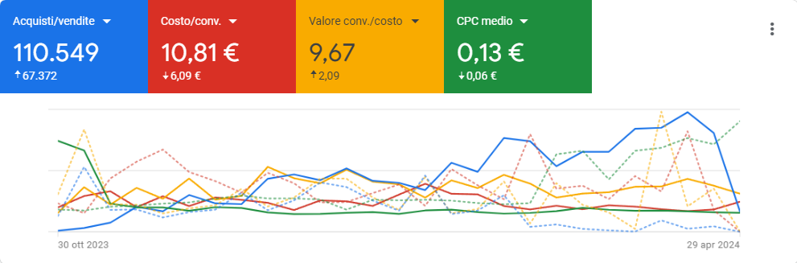

Come Abbassare il CPA Target per Aumentare i Profitti: Un Caso Studio "Out of the Box"

Introduzione
Nel mondo dell'e-commerce, si tende a ragionare in termini di revenue e ROAS (Return on Ad Spend), ma non tutti gli e-commerce sono uguali. Questo è particolarmente vero per i modelli di dropshipping, che presentano regole spesso rigide e vincolanti. In questo articolo, vi mostrerò un caso studio che dimostra come abbassare il CPA target (costo per acquisizione) possa fare la differenza per i profitti, andando oltre il concetto tradizionale di ROAS.

L'importanza della condivisione di informazioni tra cliente e marketer
Quando il cliente e il marketer condividono informazioni in modo trasparente e completo, diventa più facile ottenere risultati concreti. Spesso, però, i modelli di business come il dropshipping impongono di affrontare il problema in maniera diversa. In questo caso, il cliente che gestiva un e-commerce non riusciva a ottenere il guadagno desiderato, nonostante l'aumento costante degli acquisti.
Il problema iniziale del cliente
Dopo alcuni mesi di lavoro con me, il cliente ha iniziato a notare un aumento delle vendite, ma con un problema ricorrente: i margini di guadagno non erano sufficienti. Durante una pausa di tre settimane, il cliente è tornato da me con maggiori dettagli sulla sua situazione, che includevano informazioni cruciali come l'esistenza di costi fissi. Questi dettagli hanno permesso di affrontare il problema in modo più mirato.
Strategia: Focus sul CPA Target anziché sul ROAS
Perché il ROAS non era sufficiente
Il cliente mi ha spiegato che, a causa dei suoi costi fissi, il margine di guadagno poteva aumentare solo se riuscivamo a ridurre il costo delle campagne pubblicitarie. Questo significava che, indipendentemente dal ROAS, il vero fattore discriminante era il costo per acquisizione (CPA).
La strategia di riduzione del CPA
Per raggiungere l'obiettivo, abbiamo deciso di spostare il focus dal ROAS al CPA target, lavorando attivamente per ridurlo. Come potete vedere dal grafico allegato, il CPA target è diminuito nel tempo. Siamo partiti da un costo per vendita di circa 24€, ma oggi siamo riusciti a portarlo sotto i 10€, mantenendo un ROAS superiore al 900%.
Suggerimenti per Marketers e Imprenditori
Ai marketers: chiedete tutte le informazioni possibili
Il mio consiglio ai marketers è di chiedere sempre al cliente tutte le informazioni, anche quelle che possono sembrare banali. Capire la struttura dei costi fissi o i dettagli del modello di business, come nel caso del dropshipping, può fare la differenza tra una campagna mediocre e una di successo.
Ai titolari di e-commerce: condividete ogni informazione con il vostro marketer
Per i titolari di e-commerce, il consiglio è semplice: condividete tutte le informazioni con il vostro marketer. Meno dati avete a disposizione, più è difficile ottimizzare le campagne e raggiungere gli obiettivi di guadagno. Solo con una comunicazione aperta è possibile lavorare verso l'obiettivo comune di aumentare i profitti.
Conclusioni
Questo caso studio dimostra che per gli e-commerce con costi fissi, come nel caso del dropshipping, non sempre il ROAS è l'indicatore di performance più importante. Focalizzarsi sul CPA target può portare a risultati più soddisfacenti e margini di guadagno più alti. Ricorda: più informazioni vengono condivise, maggiori sono le probabilità di successo.